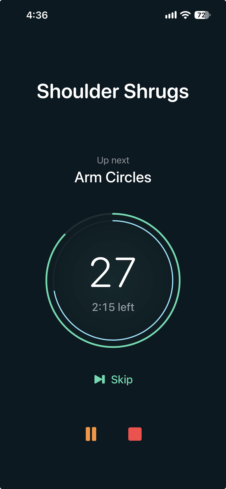
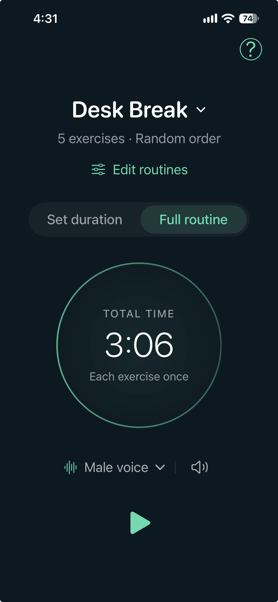
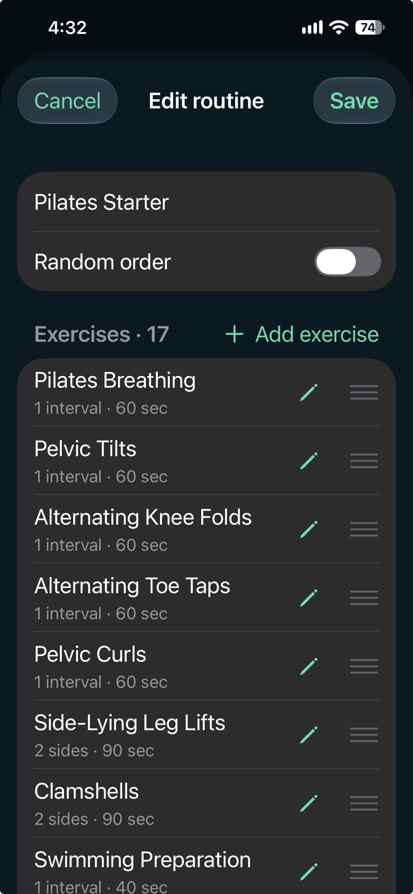
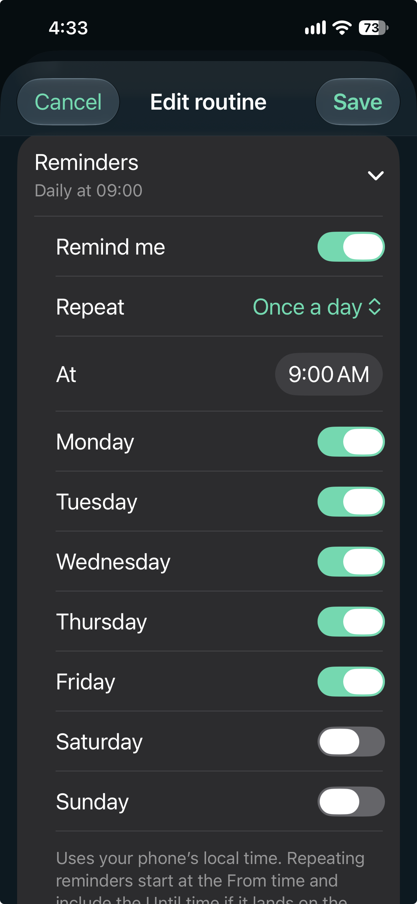

Make it yours
Start with a stretching, yoga, Pilates, or desk-break template, or create your own routine. Choose your exercises, set their duration, and follow a saved order or shuffle the sequence.
Your routine. Your rhythm.
A simple timer for the way you move. Build a stretching routine, make time for yoga or Pilates, or take a short desk break. Flow Timer keeps track of the time and announces what comes next.




Made for your everyday routine
Start with a stretching, yoga, Pilates, or desk-break template, or create your own routine. Choose your exercises, set their duration, and follow a saved order or shuffle the sequence.
Spoken announcements tell you what to do next. Bell sounds mark each interval, and a cue with five seconds remaining helps you prepare for the next movement.
Choose a session length or complete your full routine. Adjust breaks and recovery time, with automatic timing for exercises that have two sides.
Schedule reminders for selected days, once a day or every few hours. Tap a reminder to open your routine and start when you are ready.
With your nearby iPhone connected, choose a routine and start from Apple Watch. Skip an exercise or end the session from your wrist.
Keep Flow Timer open on your iPhone during a session. Locking the phone or switching apps pauses the timer; return to the app to resume.
Support
For help, feedback, or questions about the app, contact us.